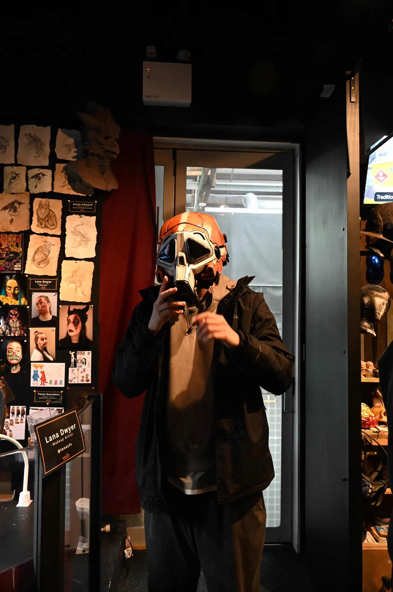
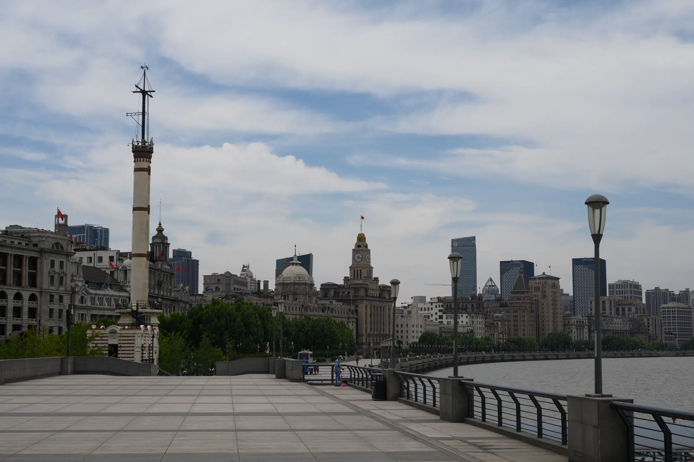
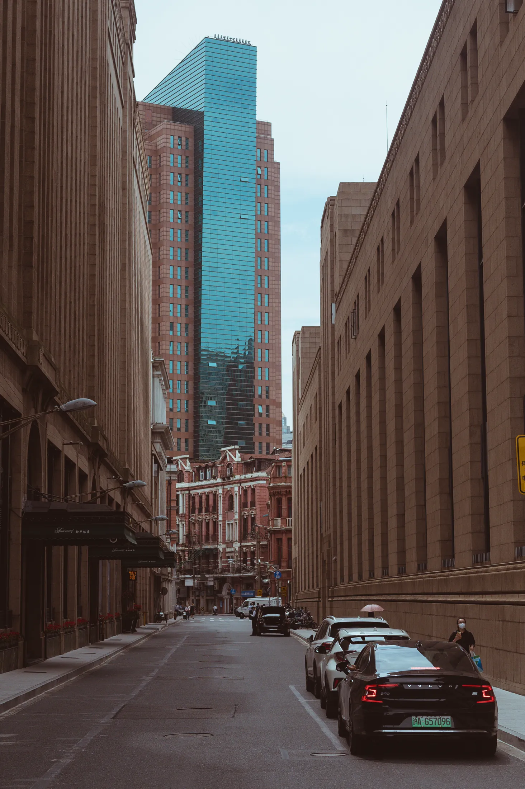
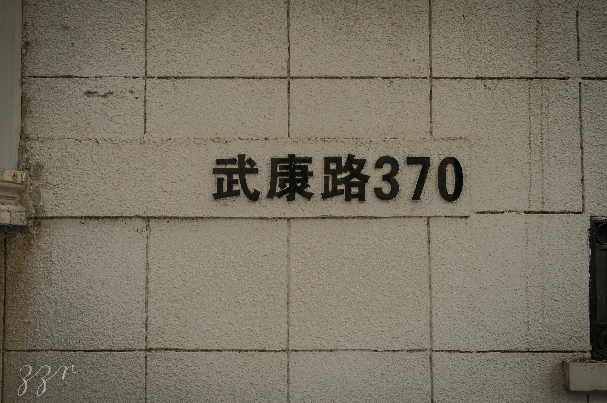
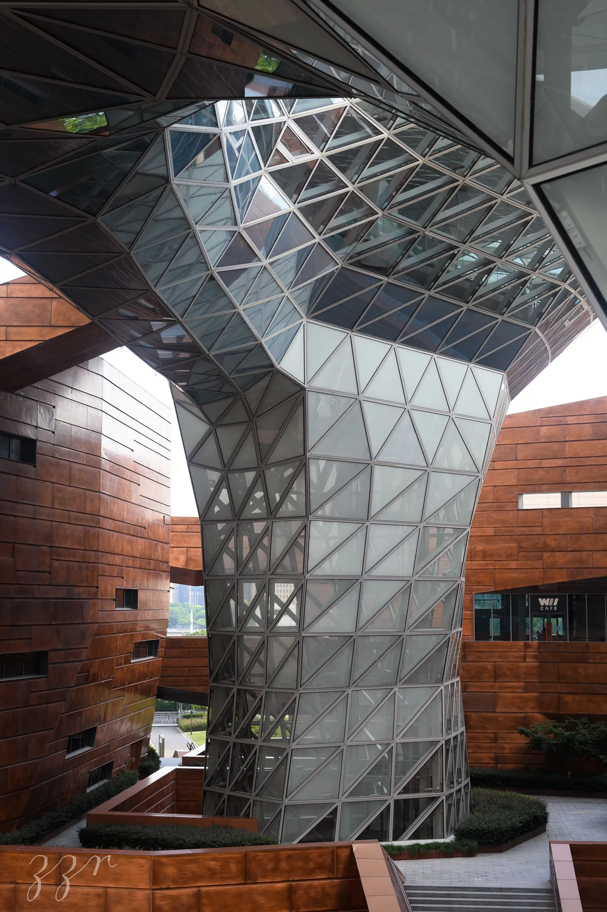

Photography Archive
Fragments of Light, Weather, and Distance
A curated photographic collection focused on atmosphere, texture, and the emotional traces of place. The page is designed as an editorial wall rather than a standard gallery, letting scale, rhythm, and pause shape how each image is encountered.



Fragments of place, memory, and motion

